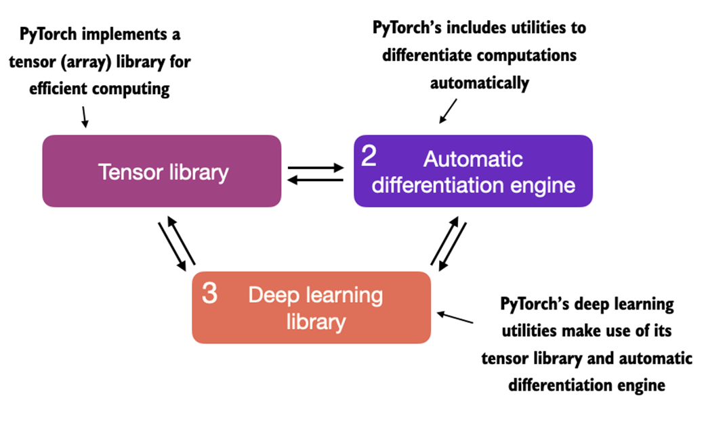
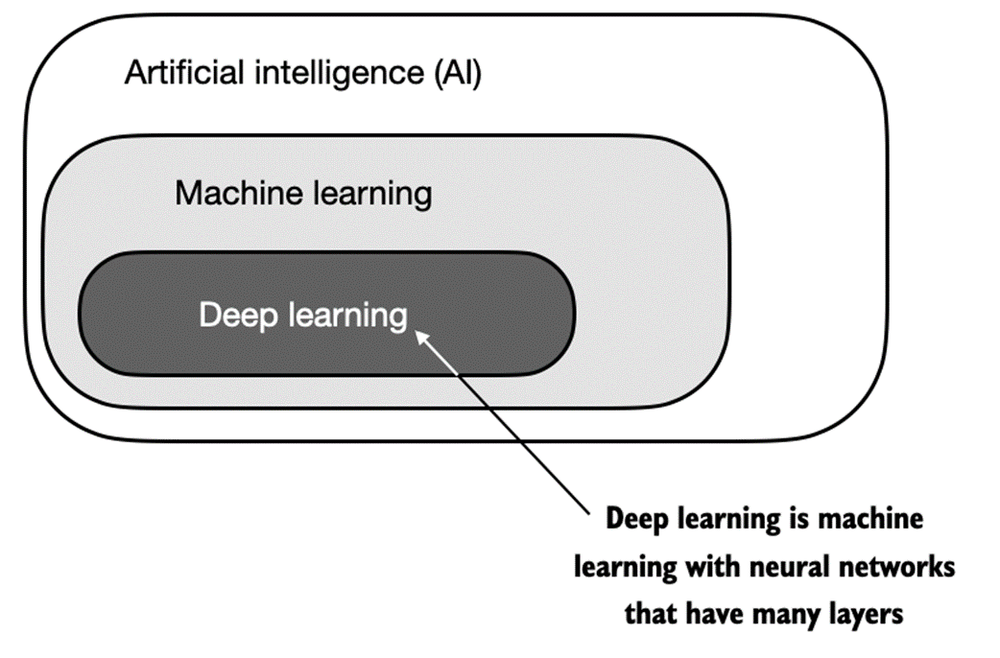
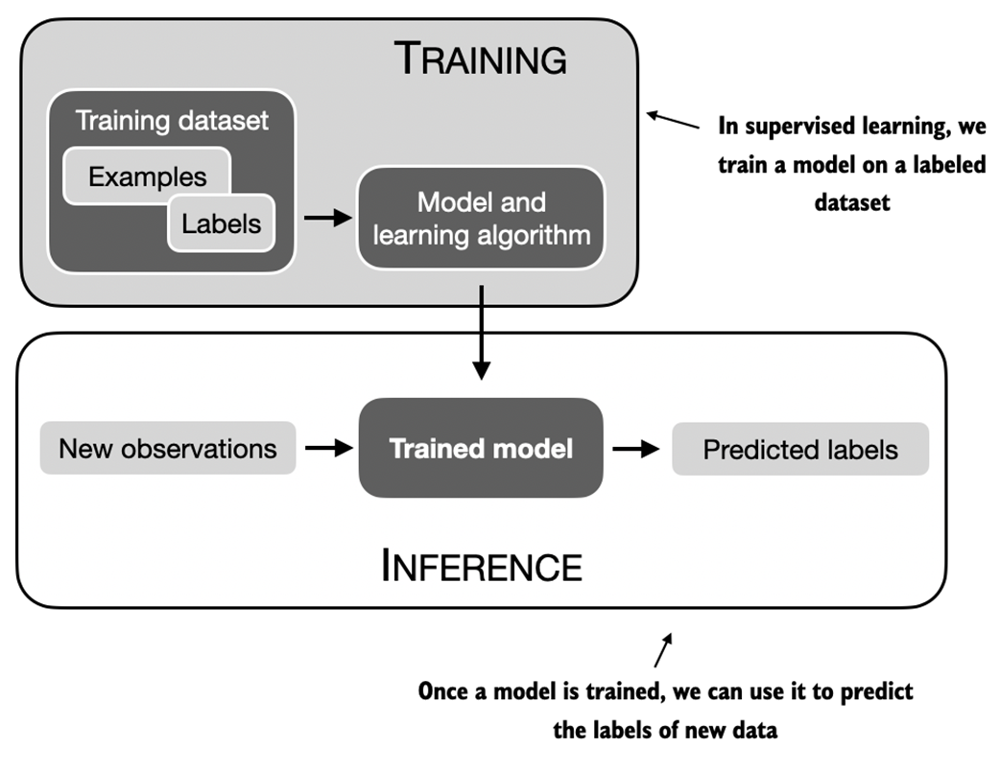

A.1 What is PyTorch?
- PyTorch is an open-source Python-based deep learning library, most widely used for research since 2019
- ~40% of Kaggle respondents use PyTorch
- Key strength: user-friendly interface without compromising flexibility
A.1.1 Three Core Components
Figure A.1 -- PyTorch's Three Main Components

From the book (Raschka, 2025)1. Tensor library -- efficient array computing
2. Automatic differentiation engine -- computes gradients automatically
3. Deep learning library -- modular building blocks (pretrained models, loss functions, optimizers)
2. Automatic differentiation engine -- computes gradients automatically
3. Deep learning library -- modular building blocks (pretrained models, loss functions, optimizers)
A.1.2 Defining Deep Learning
- AI: computer systems with human-like intelligence
- Machine learning: learning from data without explicit programming
- Deep learning: training deep neural networks with multiple hidden layers
- Supervised learning: training stage (labeled examples) and inference stage (predict new labels)
A.1.3 Installing PyTorch
pip install torch # Or specific version: pip install torch==2.4.0 # Check version: import torch torch.__version__ # '2.4.0' # Check GPU: torch.cuda.is_available() # True # Apple Silicon: torch.backends.mps.is_available()
A.2 Understanding Tensors
Tensors generalize vectors and matrices to potentially higher dimensions. Characterized by rank (number of dimensions).
Figure A.6 -- Tensor Ranks

From the book (Raschka, 2025)Scalar = 0D (rank 0), Vector = 1D (rank 1), Matrix = 2D (rank 2). PyTorch tensors support GPU and automatic differentiation.
Listing A.1: Creating PyTorch tensors
tensor0d = torch.tensor(1) # Scalar
tensor1d = torch.tensor([1, 2, 3]) # Vector
tensor2d = torch.tensor([[1, 2], [3, 4]]) # Matrix
tensor3d = torch.tensor([[[1, 2], [3, 4]],
[[5, 6], [7, 8]]]) # 3D tensor
A.2.2 Tensor Data Types
- Default integer:
torch.int64 - Default float:
torch.float32(balanced precision and efficiency) - Change type:
tensor.to(torch.float32)
A.2.3 Common Operations
tensor2d.shape # torch.Size([2, 3]) tensor2d.reshape(3, 2) # Reshape tensor2d.T # Transpose tensor2d @ tensor2d.T # Matrix multiplication tensor2d.matmul(tensor2d.T) # Same as @
A.3 Seeing Models as Computation Graphs
PyTorch's automatic differentiation engine (autograd) computes gradients in dynamic computational graphs.
Listing A.2: Logistic Regression Forward Pass
y = torch.tensor([1.0]) # True label x1 = torch.tensor([1.1]) # Input feature w1 = torch.tensor([2.2]) # Weight b = torch.tensor([0.0]) # Bias z = x1 * w1 + b # Net input a = torch.sigmoid(z) # Activation loss = F.binary_cross_entropy(a, y) # Loss
Figures A.7-A.8 -- Computation Graph and Backpropagation

From the book (Raschka, 2025)Forward pass: x1 * w1 + b -> sigmoid -> loss. Backward pass computes gradients via chain rule: dL/dw1 = (du/dw1)(dz/du)(da/dz)(dL/da).
A.4 Automatic Differentiation Made Easy
Listing A.3: Computing Gradients via Autograd
w1 = torch.tensor([2.2], requires_grad=True) b = torch.tensor([0.0], requires_grad=True) z = x1 * w1 + b a = torch.sigmoid(z) loss = F.binary_cross_entropy(a, y) grad_L_w1 = grad(loss, w1, retain_graph=True) # (tensor([-0.0898]),) grad_L_b = grad(loss, b, retain_graph=True) # (tensor([-0.0817]),) # Alternative: use .backward() loss.backward() print(w1.grad) # tensor([-0.0898]) print(b.grad) # tensor([-0.0817])
A.5 Implementing Multilayer Neural Networks
Listing A.4: Multilayer Perceptron
class NeuralNetwork(torch.nn.Module):
def __init__(self, num_inputs, num_outputs):
super().__init__()
self.layers = torch.nn.Sequential(
torch.nn.Linear(num_inputs, 30),
torch.nn.ReLU(),
torch.nn.Linear(30, 20),
torch.nn.ReLU(),
torch.nn.Linear(20, num_outputs),
)
def forward(self, x):
logits = self.layers(x)
return logits
model = NeuralNetwork(50, 3)
# Total trainable parameters: 2,213
# Forward pass
X = torch.rand((1, 50))
out = model(X) # tensor([[-0.1262, 0.1080, -0.1792]])
# Inference (no gradient tracking)
with torch.no_grad():
out = torch.softmax(model(X), dim=1)
# tensor([[0.3113, 0.3934, 0.2952]])
A.6 Setting Up Efficient Data Loaders
Listing A.6: Custom Dataset Class
class ToyDataset(Dataset):
def __init__(self, X, y):
self.features = X
self.labels = y
def __getitem__(self, index):
return self.features[index], self.labels[index]
def __len__(self):
return self.labels.shape[0]
Listing A.7: Instantiating Data Loaders
train_loader = DataLoader(
dataset=train_ds, batch_size=2, shuffle=True,
num_workers=0
)
# drop_last=True prevents smaller last batch
# num_workers>0 loads data in parallel
A.7 A Typical Training Loop
Listing A.9: Neural Network Training
model = NeuralNetwork(num_inputs=2, num_outputs=2)
optimizer = torch.optim.SGD(model.parameters(), lr=0.5)
num_epochs = 3
for epoch in range(num_epochs):
model.train()
for batch_idx, (features, labels) in enumerate(train_loader):
logits = model(features)
loss = F.cross_entropy(logits, labels)
optimizer.zero_grad() # Reset gradients
loss.backward() # Compute gradients
optimizer.step() # Update parameters
model.eval()
# Loss reaches 0 after 3 epochs = model converged
Listing A.10: Computing Prediction Accuracy
def compute_accuracy(model, dataloader):
model.eval()
correct = 0.0
total_examples = 0
for idx, (features, labels) in enumerate(dataloader):
with torch.no_grad():
logits = model(features)
predictions = torch.argmax(logits, dim=1)
compare = labels == predictions
correct += torch.sum(compare)
total_examples += len(compare)
return (correct / total_examples).item()
# Training: 1.0, Test: 1.0
A.8 Saving and Loading Models
# Save
torch.save(model.state_dict(), "model.pth")
# Load
model = NeuralNetwork(2, 2)
model.load_state_dict(torch.load("model.pth"))
# Architecture must match the original saved model exactly
A.9 Optimizing Training Performance with GPUs
A.9.1 GPU Computations
tensor_1 = tensor_1.to("cuda")
tensor_2 = tensor_2.to("cuda")
print(tensor_1 + tensor_2)
# tensor([5., 7., 9.], device='cuda:0')
# All tensors must be on the same device
A.9.2 Single-GPU Training
Only 3 lines change from CPU training:
device = torch.device("cuda" if torch.cuda.is_available() else "cpu")
model.to(device)
# In loop: features, labels = features.to(device), labels.to(device)
# Apple Silicon:
device = torch.device("mps" if torch.backends.mps.is_available() else "cpu")
A.9.3 Multi-GPU Training with DDP
DistributedDataParallel (DDP) splits input data across GPUs. Model is copied to each GPU; each gets a unique minibatch. Forward/backward passes are independent; gradients synced across GPUs.
Listing A.13: DDP Setup
def ddp_setup(rank, world_size):
os.environ["MASTER_ADDR"] = "localhost"
os.environ["MASTER_PORT"] = "12345"
init_process_group(backend="nccl", rank=rank, world_size=world_size)
torch.cuda.set_device(rank)
model = DDP(model, device_ids=[rank])
# Use DistributedSampler for data loading
# CUDA_VISIBLE_DEVICES=0 restricts to specific GPUs
Summary
- PyTorch has three core components: tensor library, automatic differentiation, and deep learning utilities
- Tensors are array-like data structures: scalars, vectors, matrices, and higher-dimensional arrays
- PyTorch tensors support GPU execution for accelerated computation
- Autograd enables convenient training via backpropagation without manual gradient derivation
DatasetandDataLoaderclasses provide efficient data-loading pipelines- Models are easiest to train on CPU or single GPU
- DistributedDataParallel is the simplest way to accelerate training with multiple GPUs